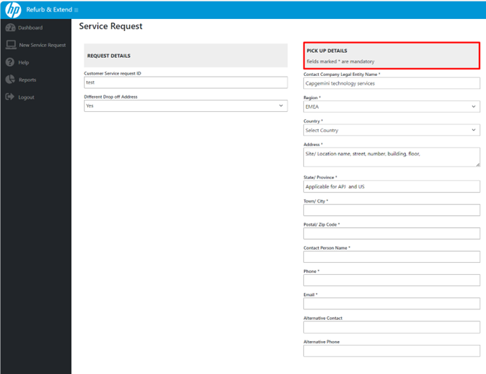

Have
questions?

The Landing Page for the Customer is the Dashboard Tab. On the Left side of the tool is situated the Navigation Pannel permitting the quick navigation between the different tabs.
1.1 Dashboard
Contains all Service Requests placed by the User and quick link to the New Service Request From.
1.2 Service Request Form
Interactive Form permitting the user to create new Service Requests for Bulk Refurbishment service.
1.3 Reports
Contains the following PBI reports updated as follow:
• Invoice Report – on monthly bases shows only the devices that return to the customer or disposed,
the type of service applied, the cost per service per country local exchange rate.
• Carbon Footprint – updated on Quarterly base showing all “Refurbished and Returned” devices.
• Operational Report – WIP

1.4 Help
Detailed manual on How To use the Portal.

1.5 Log out
The user should always log out after using the Portal
By clicking on Add New Service Request, or New Service request button in the Navigation Panel, the user will be redirected to a new Tab with a Service Request Form
2.1 Customer’s Service Request ID
The customer should generate own Service Request ID number based on the following logic and populate it the Customer’s Service Request ID Field.
• EMEA and AMS “Cap_Refurb*_Country/Location/_unique consequent number (001, 002) etc.
• APJ “Cap_REP_ (Bangalore**, Chenai etc.) _unique consequent number (001,002) etc. “
*N.B. The word “Refurbishment” shouldn’t be mentioned in any transportation documents in APJ. Instead, should be used the word “Repair”.
**For the locations with more than one Ship to Address a Separate Service Request must be placed for each address
2.2 Address and Contact details fields.
Address Specifics:
•EMEA ONLY If the Delivery Address for the Refurbished devices is different than the Collection /Pick-up Address, select Different Drop off address “YES”. (Still not in place).

•EMEA, AMS, APJ - If the Delivery Adress is the same as the Pickup Address select Different Drop off Address “NO”, check the Drop OFF DETAILS “Same as Pick up” and the same address will be populated automatically.


Populate all Mandatory fields.
•Company Legal Name
•Region
•Country
•The Address field should contain only the Street, Building, Floor, or other address-related information for which there is no specific field.
•State/ Province – Mandatory for USA and India
•Town
•Special attention should be given to the ZIP code – the error in it could cause delays during the Collection/ Delivery.
•Contact Person details – should contain the contact of the local Onsite Person who will prepare and ship the devices or will receive them.
•Phone – populate the contact details of the onsite Contact person
•Email – Populate the Contact of the Onsite Contact person.
•Populating the Alternative contact is not mandatory but recommended in case a backup is needed.
2.3 APJ India and EMEA UK only GST/ VAT.
As per local legislation, the GST/ VAT number must be provided. If one of these countries is selected an additional mandatory field will appear.

2.4 Prepare the Service Request Template.

CSV Template.

•Download the Template. The File is in CSV format. Save it, do not modify the format, the order, or the column’s names.
•Populate the Serial number, Product Number “7UN53EC-ACJ” using the “–“, instead of the “#”, Product Description, Need a BOX (yes/no), Re-repair(yes/no), Required Localization (yes/no) *, Swollen battery (yes/no).
•Upload the Saved file – it must have the same name as the Customers’ Service Request ID.
•View the file button – permits to check the uploaded details and see if they are correct or correctly imported.
*Applicable only in EMEA in case the customer would like to change the current keyboard Localization for a different one - an additional fee will be applied. (Still not in place).

If the Template isn’t properly populated the lines with errors will be highlighted. In such case the user should correct the Template and reupload it.
If the Template is correctly populated there will be no highlighted lines.
After clicking the Submit Asset button a POP-UP message will confirm the Upload.
The customer will receive a confirmation email with the generated HP Service Request ID. The confirmation email is only acknowledgment that the HP received the Service Request. As per process the RMC Fleet management team has to review and validate all data before initiating the Refurbishment process.
For any further communications, the HP and the Customer will use as Mail Subject the combination between the HP generated Service Request ID and the Customer’s Service Request ID.
1.2 Service Request Form
The Landing Page for the Customer is the Dashboard Tab. On the Left side of the tool is situated the Navigation Pannel permitting the quick navigation between the different tabs.